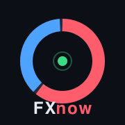
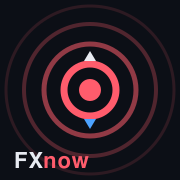
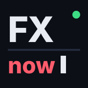
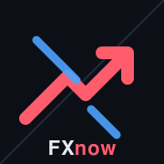
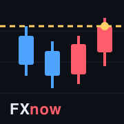

A案センチメントリング
サイトの象徴であるドーナツグラフをそのまま。買い赤・売り青の比率リング＋中央にライブ表示の緑ドット。

120px
60px
30px
iOSの角丸で表示した場合のイメージ（大＝ホーム画面 / 中・小＝設定画面やタブでの見え方）
サイトの象徴であるドーナツグラフをそのまま。買い赤・売り青の比率リング＋中央にライブ表示の緑ドット。

「今この瞬間」を発信する電波リング。中心の赤ドットから波紋が広がる。上下の小さな矢印が買い/売り。

雑誌の表紙のような文字組み。白の「FX」と赤の「now」、点滅カーソルの赤い棒がリアルタイム感を出す。

右上へ抜ける赤の太いアローと、それに割り込む青のライン。強気と弱気の綱引きを図案化。

青→赤へ切り返すローソク足と、黄色の点線＝現在価格ライン。チャートの「いま」を切り取る。
